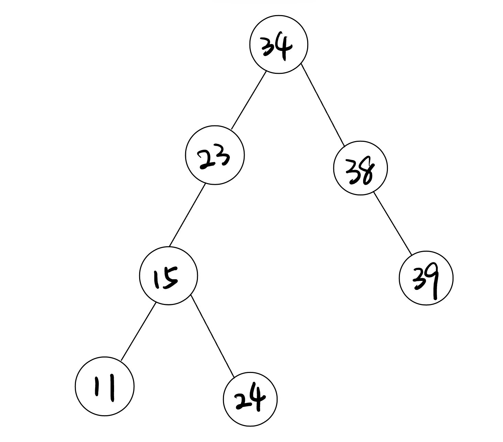
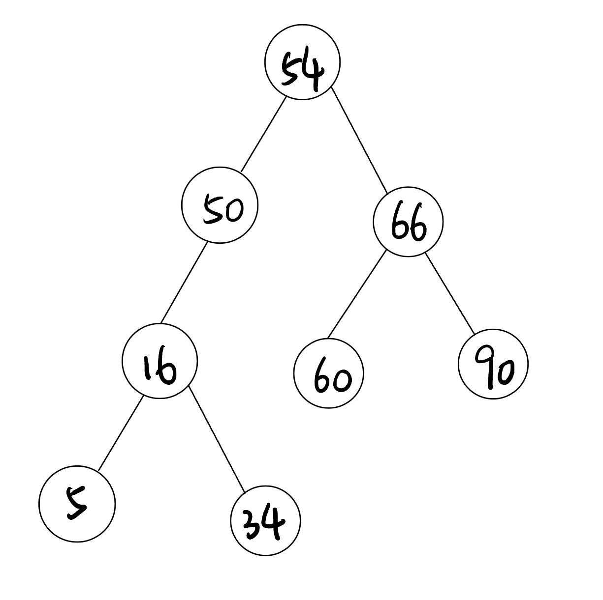
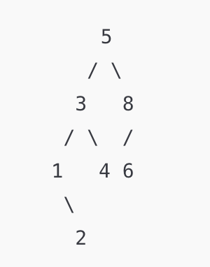
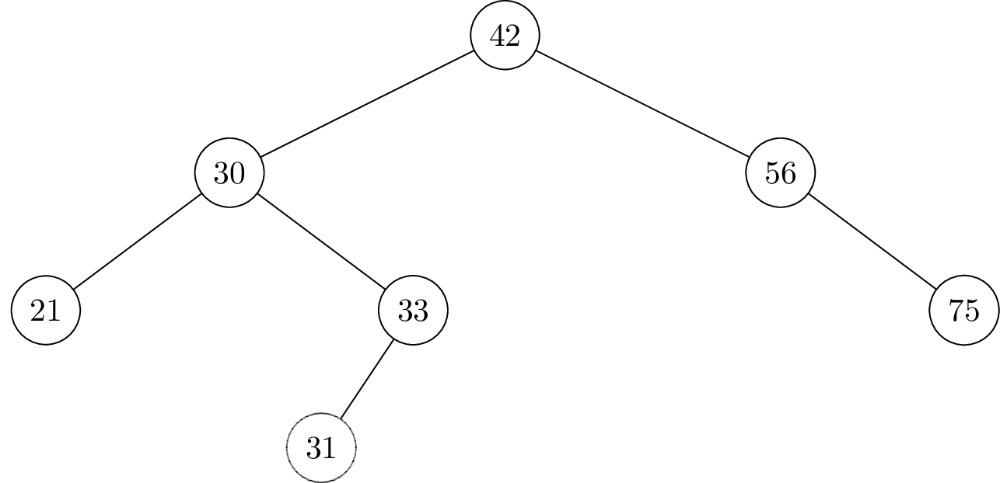
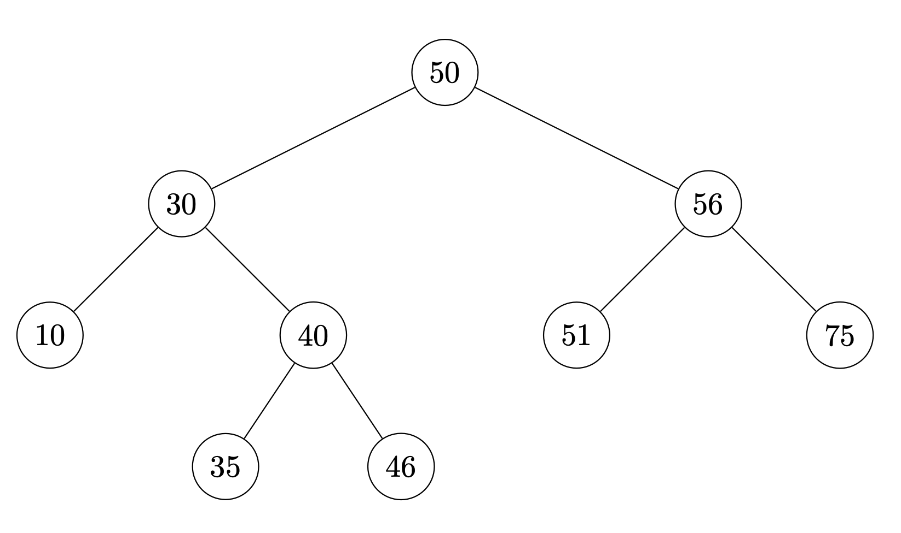

Quiz 04
Practice problems for topics on Quiz 04.
Tags in this problem set:
Problem #143
Tags: quicksort, loop invariants, lecture-07
Consider the following code, which takes in a list of integers and moves all of the odd numbers to the front and all of the even numbers to the end, in-place.
Remember that the \(\%\) operator computes the remainder of division. For example \(5 \% 2 = 1\) and \(4 \% 2 = 0\). This can be used to check if a number is even; if \(x \% 2 = 0\), then x is even.
def separate_odd_from_even(numbers):
"""Moves the odd numbers to the front, in-place."""
n = len(numbers)
def swap(i, j):
numbers[i], numbers[j] = numbers[j], numbers[i]
odd_barrier = 0
even_barrier = n - 1
while odd_barrier < even_barrier:
if numbers[odd_barrier] % 2 == 0:
# the number is even
swap(odd_barrier, even_barrier)
even_barrier -= 1
else:
# the number is odd
odd_barrier += 1Part 1)
Which of the following are valid loop invariants for the while-loop? Select all that apply.
Solution
3rd option: After each iteration, the elements in numbers[:odd_barrier] are odd.
6th option: After each iteration, the elements in numbers[even_barrier+1:] are even.
8th option: After the \(\alpha\)th iteration, even_barrier - odd_barrier = n - 1 - \(\alpha\).
Part 2)
How many iterations will the while-loop in separate_odd_from_even make if numbers has length \(100\)? Your answer should be a number.
Solution
\(99\)
Problem #144
Tags: quicksort, loop invariants, lecture-07
Consider this code which partitions a list in a special way:
def is_even(i):
"""Returns True if i is even, False otherwise."""
return i % 2 == 0
def mystery_partition(numbers):
def swap(i, j):
numbers[i], numbers[j] = numbers[j], numbers[i]
barrier_ix = 0
for i in range(len(numbers)):
if is_even(numbers[i]):
swap(i, barrier_ix)
if numbers[barrier_ix] > numbers[0]:
swap(0, barrier_ix)
barrier_ix += 1Which of the following loop invariants are true for this code? Select all that apply.
Note: any statement about an empty set or list is considered to be automatically true.
Solution
1st option: After each iteration of the for loop, all numbers in numbers[:barrier_ix] are even.
3rd option: After each iteration of the for loop, numbers[0] is greater than or equal to all numbers in numbers[:barrier_ix].
Problem #148
Tags: lecture-07, quickselect
True or False: quickselect requires the input array to be sorted in order to function correctly.
Solution
False.
quickselect works on unsorted arrays: it partitions the array around a pivot, which puts the pivot in its correct sorted position, and then recurses only on the side that contains the \(k\)th smallest element. If the array were already sorted, we wouldn't need quickselect at all; we could just look up the element at index \(k\) in \(\Theta(1)\) time.
Problem #149
Tags: lecture-07, quickselect
True or False: in order to guarantee that its output is correct, quickselect must be called on a sorted list.
Solution
False.
quickselect works on unsorted arrays: it partitions the array around a pivot, which puts the pivot in its correct sorted position, and then recurses only on the side that contains the \(k\)th smallest element. If the array were already sorted, we wouldn't need quickselect at all; we could just look up the element at index \(k\) in \(\Theta(1)\) time.
Problem #150
Tags: quicksort, lecture-08
Which of the following are properties of Quicksort? Select all that apply.
Solution
Expected time complexity is \(\Theta(n \log n)\), best case time complexity is \(\Theta(n \log n)\), and worst case time complexity is \(\Theta(n^2)\). In the best case, every pivot splits the array in half, giving the recurrence \(T(n) = 2T(n/2) + \Theta(n)\) (the same as mergesort), whose solution is \(\Theta(n \log n)\). In the worst case, every pivot is the minimum or maximum, giving \(T(n) = T(n-1) + \Theta(n)\), whose solution is \(\Theta(n^2)\).
Problem #155
Tags: loop invariants, lecture-07, quickselect
Recall the partition operation from quickselect. Which of the following arrays could have been partitioned at least once? Select all that apply.
Solution
The second, third, and last all should be selected.
Problem #156
Tags: lecture-07, quickselect
Which of the following arrays could have been partitioned at least once? (Select all that apply)
Hint: there are three.
Solution
[15, 25, 35, 45, 55], [6, 5, 1, 8, 3, 15], and [0, 10, 15, 18, 20, 30, 29, 19]. After a partition, the pivot is in its final sorted position: everything to its left is smaller and everything to its right is at least as large. So an array could have been partitioned only if some element has this property. In [15, 25, 35, 45, 55] every element does; in [6, 5, 1, 8, 3, 15] the 15 does; and in [0, 10, 15, 18, 20, 30, 29, 19] the 0 (and the 10, 15, and 18) does. None of the other arrays has such an element.
Problem #157
Tags: lecture-07, quickselect
The code for quickselect is shown below. It is the same as the code provided in lecture, except that it contains an added print statement.
import random
def quickselect(arr, k, start, stop):
"""Finds kth order statistic in numbers[start:stop])"""
print("hello world!") # <--- here is the print
pivot_ix = random.randrange(start, stop)
pivot_ix = partition(arr, start, stop, pivot_ix)
pivot_order = pivot_ix + 1
if pivot_order == k:
return arr[pivot_ix]
elif pivot_order < k:
return quickselect(arr, k, pivot_ix + 1, stop)
else:
return quickselect(arr, k, start, pivot_ix)Suppose quickselect(arr, 3, 0, 10) is called with arr = [5, 2, 8, 3, 1, 6, 9, 7, 4, 0].
Part 1)
What is the fewest number of times that ``hello world!'' can possibly be printed? Your answer should be a number, and not in terms of \(n\).
Solution
1
Part 2)
What is the greatest number of times that ``hello world'' can possibly be printed? Your answer should be a number, and not in terms of \(n\).
Solution
10
Problem #158
Tags: lecture-07, quickselect
Suppose a quickselect is being performed on an array. In the middle of the quickselect, you are told that the array has been partitioned exactly twice thus far, and that the third order and sixth order statistics have been identified as a result. Which one of the following arrays is partitioned in this manner?
Solution
[10, 5, 20, 45, 21, 52, 67, 54]. The two pivots must be the 3rd and 6th smallest elements, so they must sit at indices 2 and 5 with everything to their left smaller and everything to their right larger. In this array, 20 (index 2) and 52 (index 5) both satisfy this. In the first array, 4 has 6 to its left; in the third, 2 has 3 to its left; and in the fourth, 14 at index 5 has 45 to its left.
Problem #160
Tags: lecture-07, quickselect
Suppose quickselect is used on an array of size 11 to find the median. The median is located as the second element of the array (at index 1), but the rest of the array is sorted in descending order. If we change the behavior of quickselect so that the pivot index is no longer random, instead always choosing start as the pivot index (pivot_ix = start), how many calls to quickselect will need to be made to find the median? Assume that quickselect is using the in_place_partition algorithm from lecture. You may also assume that for the first call of quickselect start = 0 and stop = len(arr).
Solution
Answer: 3. For example, take arr = [10, 5, 9, 8, 7, 6, 4, 3, 2, 1, 0], whose median is 5. The first call uses 10 (the maximum) as the pivot; in_place_partition moves it to the end, giving [0, 5, 9, 8, 7, 6, 4, 3, 2, 1, 10], so we recurse on indices 0 through 9. The second call uses 0 (the minimum) as the pivot, which stays at index 0, so we recurse on indices 1 through 9. The third call uses the median, 5, as the pivot, and after partitioning it lands at index 5, so it is returned.
Problem #161
Tags: binary search trees, lecture-08
True or False: the below is a binary search tree.

Solution
False. 24 is in the left subtree of 23, but 24 > 23. (It is also in the left subtree of 34, which is fine, but every node in 23's left subtree must be less than 23.)
Problem #162
Tags: binary search trees, lecture-08
Consider the following binary search tree:

How many comparisons does it take to query 3? That is, how many times is 3 compared to another number during a query?
Solution
Answer: 4. The query compares 3 to 54, then 50, then 16, then 5. Since 5 has no left child, the query ends there and reports that 3 is not in the tree.
Problem #163
Tags: binary search trees, lecture-08
Consider the following binary search tree:

Where should we insert 49 ?
Solution
The right edge of 34. Starting at the root: 49 < 54, so go left to 50; 49 < 50, so go left to 16; 49 > 16, so go right to 34; 49 > 34, and 34 has no right child, so 49 becomes the right child of 34.
Problem #164
Tags: binary search trees, lecture-08
Draw the binary search tree that results from inserting the following nodes into an initially empty tree, in the order given: 5, 3, 1, 8, 4, 2, 6.
Solution

Problem #165
Tags: binary search trees, lecture-08
Suppose the numbers 41, 32, and 40 are inserted (in that order) into the below binary search tree. Draw where the new nodes will appear.

Solution
41 will be the right child of 33.
32 will be the right child of 31.
40 will be the left child of 41.
Problem #166
Tags: binary search trees, lecture-08
Suppose the numbers 41, 32, and 33 are inserted (in that order) into the below binary search tree. Draw where the new nodes will appear.

Solution
41 will become the left child of 46.
32 will become the left child of 35.
33 will become the right child of 32.
Problem #167
Tags: binary search trees, lecture-08
Define the largest gap in a collection of numbers (also known as its range) to be greatest difference between two elements in the collection (in absolute value). For example, the largest gap in \(\{4, 9, 5, 1, 6\}\) is 8 (between 1 and 9).
Suppose a collection of \(n\) numbers is stored in a balanced binary search tree. What is the time complexity required of an efficient algorithm to calculate the largest gap in the collection? State your answer as a function of \(n\) in asymptotic notation.
Solution
\(\Theta(\log n)\). To find the largest gap, we simply need to find the minimum and the maximum in the balanced BST, which both take \(\Theta(\log{n})\) time. Therefore adding them up, the time complexity for calculating the largest gap is \(\Theta(\log{n})\).
Problem #168
Tags: binary search trees, lecture-08
Define the largest gap in a collection of numbers to be the largest difference between two distinct elements in the collection (in absolute value). For example, the largest gap in \(\{4, 9, 1, 6\}\) is 8 (between 1 and 9).
Suppose a collection of \(n\) numbers is stored in a balanced binary search tree. What is the time complexity required for an efficient algorithm to calculate the largest gap of the numbers in the BST? State your answer as a function of \(n\) in asymptotic notation.
Solution
\(\Theta(\log n)\). With the same reasoning as Problem 20, we only require the largest and smallest number in the BST in order to find the largest gap (just subtract the smallest from the largest number), therefore the time complexity of this operation in a balanced BST will be \(\Theta(\log{n})\).
Problem #169
Tags: binary search trees, lecture-08
Suppose a collection of \(n\) numbers is stored in a balanced binary search tree. What is the time complexity required of an efficient algorithm to calculate the mean of the collection? State your answer as a function of \(n\) in asymptotic notation.
Solution
\(\Theta(n)\). Without knowing any information on the numbers, the best we can do to compute the mean is to add all numbers in the BST divided by the total number of nodes in the BST. To do this, we will have to traverse the entire BST no matter what (via some traversal algorithm), which takes \(\Theta(n)\) time. (Note that the word \(\textbf{balanced}\) does not help in this question!!!)
Problem #170
Tags: binary search trees, lecture-08
Define the smallest gap in a collection of numbers to be the smallest difference between two distinct elements in the collection (in absolute value). For example, the smallest gap in \(\{4, 9, 1, 6\}\) is 2 (between 4 and 6).
Suppose a collection of \(n\) numbers is stored in a balanced binary search tree. What is the time complexity required for an efficient algorithm to calculate the smallest gap of the numbers in the BST? State your answer as a function of \(n\) in asymptotic notation.
Solution
\(\Theta(n)\). The smallest gap in the BST can occur between any two consecutive pairs of numbers in the BST, meaning that no matter what we need to search through the whole tree to obtain this number, taking \(\Theta(n)\) time.
Problem #171
Tags: binary search trees, lecture-08
Consider the following .insert() method for a binary search tree:
def insert(self, new_key):
# assume new_key is unique
current_node = self.root
parent = None
# find place to insert the new node
while current_node is not None:
parent = current_node
if current_node.key < new_key:
current_node = current_node.right
else: # current_node.key > new_key
current_node = current_node.left
# create the new node
new_node = Node(key=new_key, parent=parent)
# if parent is None, this is the root. Otherwise, update the
# parent's left or right child as appropriate
if parent is None:
self.root = new_node
elif parent.key < new_key:
parent.right = new_node
else:
parent.left = new_nodeLet's say we want to insert a new number \(x\) into a binary search tree.Define height_left as the height of the left half of the binary tree (the root and everything to the left of it), and height_right as the height of the right side. For this problem, measure height as the number of nodes on the longest path starting at the root (so a tree consisting of only a root has height 1). Let height_left be greater than height_right. In the worst case, how many iterations of the while loop of .insert() will need to be completed?
Solution
height_left. Each iteration of the while loop moves one level down the tree, visiting one node. In the worst case, \(x\) is inserted below the deepest node, which is on the left side since height_left is greater than height_right. The loop visits every node on the path from the root to that node, which is height_left nodes.
Problem #172
Tags: binary search trees, lecture-08
Suppose bst is a binary search tree with \(n\) nodes constructed in the following way:
bst = BinarySearchTree()
for i in range(n):
if i % 2 == 0:
bst.insert(i)What is the time complexity of the following code?
for i in range(n):
bst.query(i)Solution
\(\Theta(n^2)\). The keys \(0, 2, 4, \ldots\) are inserted in increasing order, so each new node becomes the right child of the previous one and the tree is a "linked list" of height \(\Theta(n)\). Querying \(i\) walks down this chain past about \(i/2\) nodes, so the total time is \(\sum_{i=0}^{n-1} \Theta(i) = \Theta(n^2)\).
Problem #173
Tags: time complexity, binary search trees, lecture-08
Suppose a collection of unique numbers is stored in a balanced binary search tree, and that each node in the tree has been given a .size attribute which contains the number of nodes in the subtree rooted at that node. What is the time complexity required of an efficient algorithm for computing the number of elements in the collection which are larger than some threshold, \(t\)?
Solution
\(\Theta(\log{n})\). We can consider the following algorithm: Query for \(t\) in the BST, and define a new variable total for tracking the result. For each step of the recursion, if we go to the left, add the size of the right branch + 1 to the running total. We repeat the above until the query() function finishes running, which will give us exactly the number of elements in the collection which are larger than \(t\). Since we are querying (and adding some constant time updating steps) in a balanced BST, the time complexity for this question will be \(\Theta(\log{n})\).